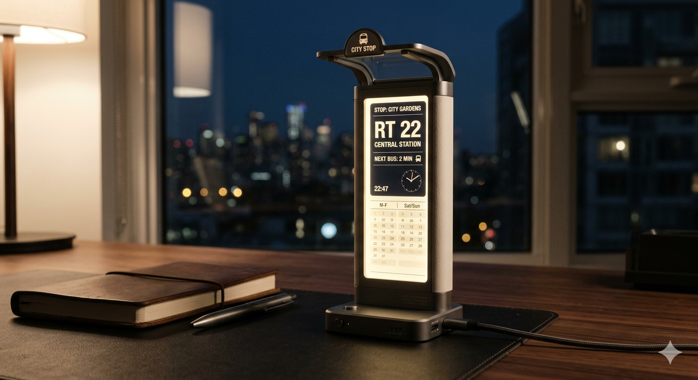

城市夜晚站牌物件
城市巴士站
這款精心設計的微縮巴士站桌上展示藝品，將城市深夜的靜謐與秩序感帶到您的案頭。修長的站柱、柔和背光與簡潔的路線介面，營造出夜裡獨自候車時特有的安定與沉思感。
垂直站柱嵌入微型發光面板，可模擬真實巴士站的路線圖與時刻表，同步呈現當前時間、行程提醒或自定義的都市風數位內容。這種功能性被隱藏在安靜而整潔的視覺語言之中，讓它更像一件桌面氣氛裝置，而不是單純電子器具。
採用磨砂金屬與乳白色複合材料後，整體觸感溫潤又具現代極簡氣質，非常適合放在書桌、工作室或夜晚閱讀角落。
- 材質方向：磨砂金屬、乳白色複合材料、背光面板
- 顯示內容：時間、路線圖、提醒、自定義城市內容
- 氛圍關鍵字：都市深夜、候車靜默、秩序與安穩